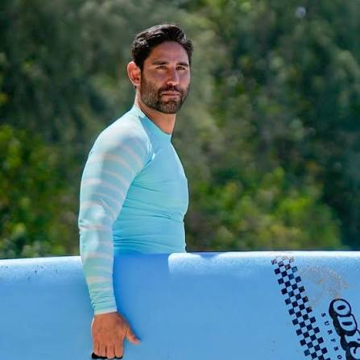

Rich Chavez
Stunt Coordinator & Fight Choreographer
AKA "The Freaking Beard Man." Rich Chavez is known for NCIS: Hawai'i (2021), The Chosen (2017), and American Murderer (2022). A professional Stunt Coordinator with exceptional talent and originality, Rich has built a reputation as one of the premier stunt professionals in the American Midwest and beyond. His ability to blend dynamic action, cinematic storytelling, and performer safety makes him an invaluable creative partner for productions of every scale.